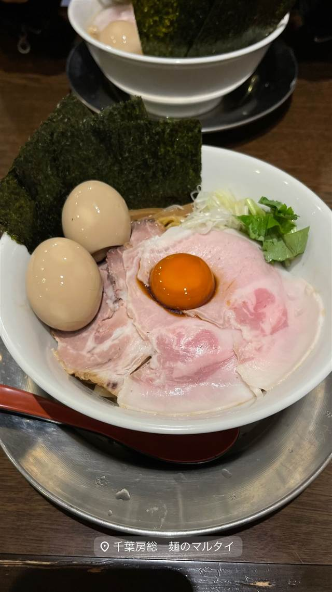

麺屋 まほろ芭
広島県産牡蠣を1杯に8個使う濃厚牡蠣煮干しそば
麺屋 まほろ芭
本郷三丁目の名店「麺屋ねむ瑠」の系列店として2018年5月に蒲田で開業した煮干しラーメン店。看板は広島県産牡蠣を丼一杯に8個使う濃厚牡蠣煮干しそばで、数量限定のため早い時間に売り切れることも多い。
TRIVIA
へえ、という話
- 1杯のスープに広島県産牡蠣を8個使用
- 系列店「麺屋ねむ瑠」（本郷三丁目）の濃厚系と、まほろ芭の淡麗系で味の系統を分けている
| 創業 | 2018年5月16日開業 |
|---|---|
| 系譜 | 本郷三丁目の人気煮干しラーメン店「麺屋ねむ瑠」の系列2号店（姉妹店） |
| 看板 | 濃厚牡蠣煮干しそば（広島県産牡蠣を1杯に8個使用、昼20食・夜15食限定）。あっさり系の淡麗中華そばも提供。 |
| こだわり | 鶏白湯と煮干し出汁に牡蠣出汁を合わせた濃厚スープ。限定食数で提供し売り切れ次第終了。 |
| 予算 | 昼 ¥1,000～¥1,999 夜 ¥1,000～¥1,999 |
| 予約 | 予約不可 |
| 場所 | 蒲田駅 東京都大田区蒲田5-34-4 |
| 注意 | 看板メニューは数量限定（昼20食・夜15食）で売り切れ終了になりやすい。 |
食べたもの：ラーメン / 和え玉
NEARBY
近い店・同じ系統の店
-
 ★
煮干し・魚介 荻窪
there is ramen
開業1年でミシュランのビブグルマンを獲得した花びらチャーシュー
昼 ¥1,000～¥1,999 夜 ¥1,000～¥1,999
★
煮干し・魚介 荻窪
there is ramen
開業1年でミシュランのビブグルマンを獲得した花びらチャーシュー
昼 ¥1,000～¥1,999 夜 ¥1,000～¥1,999
-
 煮干し・魚介 町田
貝だしラーメン 貝ガラ屋 町田店
3種の牡蠣でとる白湯スープ、ポタージュのような濃厚牡蠣ソバ
夜 ¥1,000～¥1,999
煮干し・魚介 町田
貝だしラーメン 貝ガラ屋 町田店
3種の牡蠣でとる白湯スープ、ポタージュのような濃厚牡蠣ソバ
夜 ¥1,000～¥1,999
-
 煮干し・魚介 神楽坂駅
サーモンnoodle 3.0
サーモン一匹を使い切る世界初のサーモンラーメン
昼 ¥1,000～¥1,999 夜 ¥1,000～¥1,999
煮干し・魚介 神楽坂駅
サーモンnoodle 3.0
サーモン一匹を使い切る世界初のサーモンラーメン
昼 ¥1,000～¥1,999 夜 ¥1,000～¥1,999
-

煮干し・魚介 千葉房総 麺のマルタイ 昼 ¥1,000～¥1,999 夜 ¥1,000～¥1,999 -
 煮干し・魚介 大門駅
炭火焼濃厚中華そば 奥倫道
魚を骨ごとペーストにして炭火で焼き上げるあご出汁ラーメン
昼 ¥1,000～¥1,999 夜 ¥1,000～¥1,999
煮干し・魚介 大門駅
炭火焼濃厚中華そば 奥倫道
魚を骨ごとペーストにして炭火で焼き上げるあご出汁ラーメン
昼 ¥1,000～¥1,999 夜 ¥1,000～¥1,999
-
 煮干し・魚介 武蔵新城
さかなとブタで幸なった。
豚骨と煮干しを掛け合わせた豚煮干しラーメン
昼 ¥1,000～¥1,999 夜 ¥1,000～¥1,999
煮干し・魚介 武蔵新城
さかなとブタで幸なった。
豚骨と煮干しを掛け合わせた豚煮干しラーメン
昼 ¥1,000～¥1,999 夜 ¥1,000～¥1,999